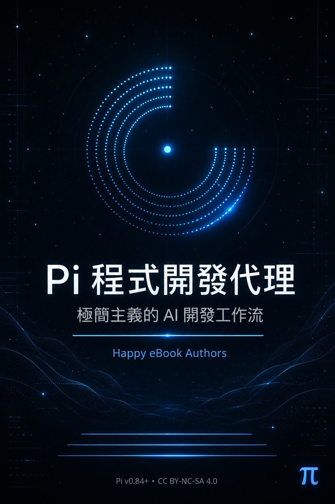

打造會自我擴展的終端機 Agent

Pi 程式開發代理：極簡主義的 AI 開發工作流
2026 年的終端機編碼代理已經高度收斂：讀檔、寫檔、跑 shell、串流輸出。 ——四個工具、不到 1,000 tokens 的系統提示詞、刻意不內建 MCP / sub-agents / plan mode，把「缺什麼就叫 agent 自己造」變成核心工作流。 這本書記錄如何駕馭這種極簡主義：不只是「用 Pi」，而是「把 Pi 變成你的 Pi」。